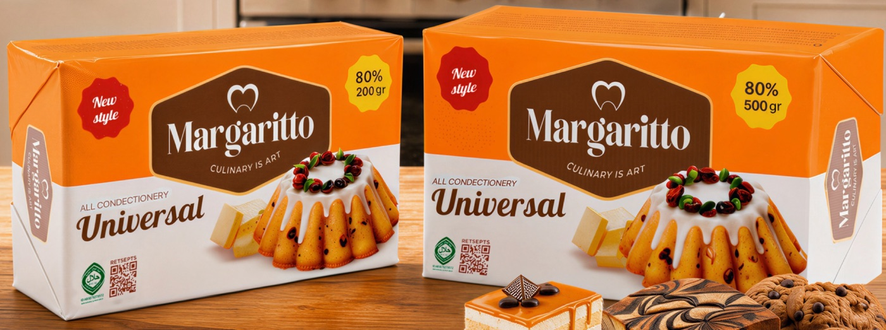

80%Розница
Margaritto Universal
Предназначен для производства различных кондитерских изделий и обладает сливочным вкусом. Подходит для мучных изделий, песочного теста, хлеба и изделий из дрожжевого теста. В основном используется в домашней выпечке.
- Тип
- Маргарин
- Упаковка
- 200 г / 500 г, кошерный брикет
- В коробке
- 200 g × 30 = 6 kg
500 g × 12 = 6 kg - Размер коробки
- 200 г: 8×20×35 см
500 г: 13×21×25 см
Хлеб и булочкиПесочное тесто и кексыНаполеон и МедовикПеченье и самса